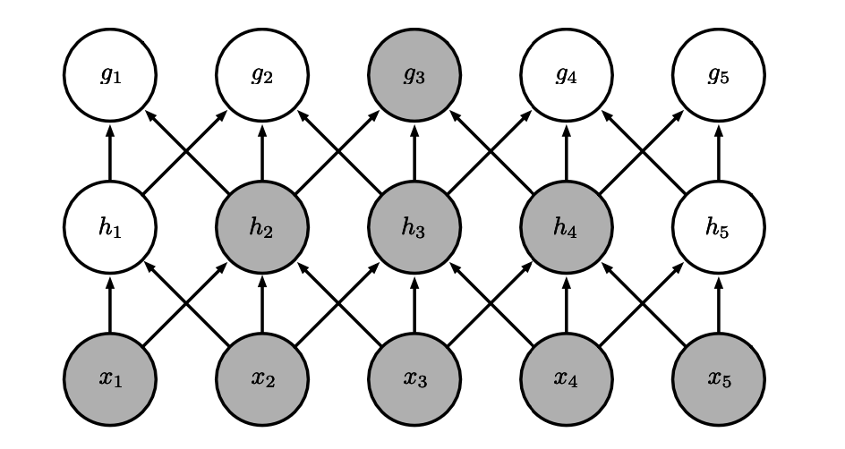
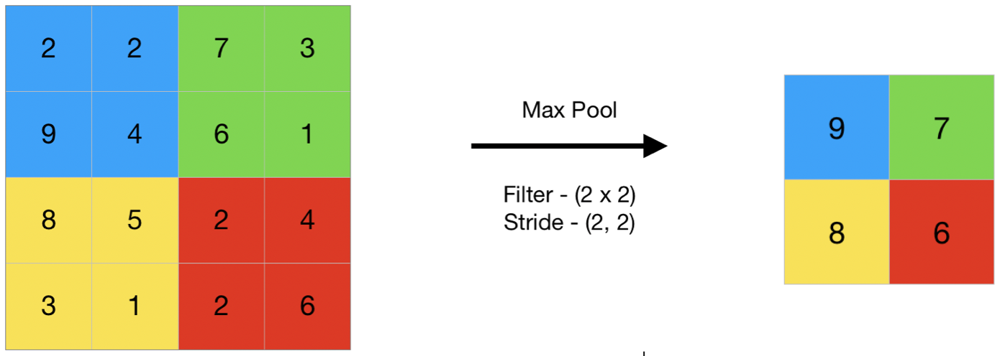

Convolutional networks
Lviv University
Convolutional NNs
Definition
Convolutional networks (LeCun, 1989), also known as convolutional neural networks, or CNNs, are a specialized kind of neural network for processing data that has a known grid-like topology.
CNNs are a family of models that were originally inspired by how the visual cortex of the human brain works when recognizing objects.
Convolutional NNs
What’s in a name?
Convolutional networks have been tremendously successful in practical applications. The name “convolutional neural network” indicates that the network employs a mathematical operation called convolution. Convolution is a specialized kind of linear operation.
Data Examples
Examples include:
- time-series data, which can be thought of as a 1-D grid taking samples at regular time intervals
- image data, which can be thought of as a 2-D grid of pixels
Convolutional NNs
Image processing challenges using feed-forward NNs
- Images generally have a high dimensionality, with typical cameras capturing images comprising tens of megapixels.
- More significantly, such an approach fails to take account of the highly structured nature of image data, in which the relative positions of different pixels play a crucial role.
Convolutional NNs
Uses
- Classification of images. This is sometimes called ‘image recognition’.
- Detection of objects in an image and determining their locations within the image.
- Segmentation of images.
- Caption generation.
- Synthesis of new images.
Convolutional NNs
Uses
- Inpainting.
- Style transfer.
- Super-resolution.
- Depth prediction.
- Scene reconstruction.
Convolutional NNs
Data properties
- stored as multi-dimensional arrays.
- one or more axes for which ordering matters (e.g., width and height axes for an image, time axis for a sound clip).
- one axis, called the channel axis, is used to access different views of the data (e.g., the red, green and blue channels of a color image, or the left and right channels of a stereo audio track).
History
History
Origins
The development of CNNs goes back to the 1990s, when Yann LeCun and his colleagues proposed a novel NN architecture for classifying handwritten digits from images
Turing award
Several years later, in 2019, Yann LeCun received the Turing award (the most prestigious award in computer science) for his contributions to the field of artificial intelligence (AI), along with two other researchers, Yoshua Bengio and Geoffrey Hinton.
History
Cats
The original discovery of how the visual cortex of our brain functions was made by David H. Hubel and Torsten Wiesel in 1959, when they inserted a microelectrode into the primary visual cortex of an anesthetized cat.
They measured the electrical responses of individual neurons in the visual cortex of cats while presenting visual stimuli to the cats’ eyes.
Cat experiment
Visual cortex
Visual cortex
Gabor filters
These model responses of simple cells. \[ \begin{align*} &G(x,y) = A \exp \left(-\alpha \tilde{x}^2 - \beta \tilde{y}^2\right) \sin \left(\omega \tilde{x} + \psi\right), \; \text{where} \\ &\tilde{x} = (x-x_0)\cos \theta + (y-y_0) \sin \theta, \\ &\tilde{y} = -(x-x_0)\sin \theta + (y-y_0) \cos \theta. \end{align*} \]
Gabor filters example
Alexnet
Convolutional NNs
Convolutional NNs
Definition
Convolutional networks are neural networks that use convolution in place of general matrix multiplication in at least one of their layers.
Feed-forward NN
\[ z = Wx + b \]
Convolutional NN
\[ \textbf{Z} = \textbf{W} \ast \textbf{X} + b \]
Convolutions
Plan
- what’s a convolution?
- motivation for convolutions in NNs
- pooling
- variants of convolution functions
- efficiency matters
Convolutions
General definition
An operation on two functions of a real-valued argument.
Spaceship example
- Suppose we are tracking the location of a spaceship with a laser sensor. Our laser sensor provides a single output \(x(t)\), the position of the spaceship at time \(t\). Both \(x\) and \(t\) are real valued.
- Suppose that measurements are noisy. Do averaging to compensate with a weighting function \(w(a)\), where \(a\) is the age of the measurement. Give more weight to recent measurements.
- Result: \(s(t) = \int x(a)w(t-a)da\).
Convolutions
Limitations
- \(w\) needs to be a valid probability density function, or the output will not be a weighted average.
- Also, \(w\) needs to be \(0\) for all negative arguments, or it will look into the future, which is presumably beyond our capabilities.
Convolutions
Notation
\[ s(t) = (x \ast w)(t) \]
Terminology
- the first argument \(x\) is the input or signal.
- the second argument \(w\) is the filter orkernel.
- output is the feature map.
Convolutions
Discrete convolution
Measurements cannot be continuous in practice, they will be discrete. Therefore: \[ s(t) = (x \ast w)(t) = \sum\limits_{a=-\infty}^{+\infty} x(a)w(t-a). \]
Convolutions
2D
Multiple axes: suppose we have a two-dimensional image \(I\) and thus two-dimensional kernel \(K\). \[ S(i, j) = (I \ast K)(i,j) = \sum\limits_m \sum\limits_n I(m,n)K(i-m,j-n) \] By commutativity: \[ S(i, j) = (K \ast I)(i,j) = \sum\limits_m \sum\limits_n I(i-m,j-n)K(m,n) \]
Cross-correlation
Commutativity
The commutative property of convolution arises because we have flipped the kernel relative to the input, in the sense that as m increases, the index into the input increases, but the index into the kernel decreases. The only reason to flip the kernel is to obtain the commutative property.
Cross-correlation - Definition
\[ S(i, j) = (I \ast K)(i,j) = \sum\limits_m \sum\limits_n I(i+m,j+n)K(m,n) \]
Convolutions
Properties
- Discrete convolution preserves ordering!
- sparse (only a few input units contribute to a given output unit)
- reuses parameters (the same weights are applied to multiple locations in the input).
Convolutions
Analogies with weight/bias
- input is a multidimensional array of data (a tensor)
- kernel is a multidimensional array of parameters (also a tensor)
- input/kernel are zero everywhere except for points where we have the data. Therefore, summation becomes finite.
Example
Analogy
Algebraic analogy
Discrete convolution can be viewed as a matrix multiplication, but matrix has several entries constrained to be equal to other entries. Also, matrices are very sparse, because kernel is usually much smaller than the input.
In two dimensions, a doubly block circulant matrix corresponds to convolution.
Toeplitz matrix
For univariate discrete convolution, each row of the matrix is constrained to be equal to the row above shifted by one element.
\[ \begin{pmatrix} 2 & -1 & 0 & \cdots & \cdots & \cdots & \cdots & 0\\ -1 & 2 & -1 & 0 & & & & \vdots\\ 0 & -1 & 2 & -1 & \ddots & & & \vdots\\ \vdots & 0 & \ddots & \ddots & \ddots & \ddots & & \vdots\\ \vdots & & \ddots & \ddots & \ddots & \ddots & 0 & \vdots\\ \vdots & & & \ddots & -1 & 2 & -1 & 0\\ \vdots & & & & 0 & -1 & 2 & -1\\ 0 & \cdots & \cdots & \cdots & \cdots & 0 & -1 & 2\\ \end{pmatrix} \]
Motivation
Ideas
- sparse interactions
- parameter sharing
- equivariant representations
- variable-size inputs
Sparseness
Note
- in traditional NN, every output unit interacts with every input unit.
- in CNN, we have sparse interactions (also referred to as sparse connectivity or sparse weights).
- this is accomplished by making the kernel smaller than the input.
- results in efficiency improvements
Sparseness
Complexity notes
For matrix multiplication, in case of \(m\) inputs and \(n\) otputs: \(O(m \times n)\).
Limit number of output connections to \(k\), get \(O(k \times n)\) complexity
Improvement
It’s possible to obtain good performance while keeping \(k \ll m\).
Sparseness
Sparse connectivity, viewed from below.
Sparseness

Sparse connectivity, viewed from above.
Sparseness
Large receptive field.
Parameter sharing
Definition
Parameter sharing refers to using the same parameter for more than one function in a model. As a synonym for parameter sharing, one can say that a network has tied weights.
Parameter sharing
Efficiency of edge detection.The image on the right was formed by taking each pixel in the original image and subtracting the value of its neighboring pixel on the left.
Equivariance
Definition
To say a function is equivariant means that if the input changes, the output changes in the same way.
Specifically, a function f(x) is equivariant to a function g if \(f(g(x)) = g(f(x))\).
In the case of convolution, if we let g be any function that translates the input, that is, shifts it, then the convolution function is equivariant to g.
Convolutions
Kernel example.
Convolutions

Convolutions
Convolutions
Shape
The collection of kernels defining a discrete convolution has a shape corresponding to some permutation of \((n, m, k_1, \dots, k_N)\), where
- $n $ number of output feature maps
- $m $ number of input feature maps
- $k_j $ kernel size along axis \(j\)
Convolutions
Shape
The following properties affect the output size \(o_j\) of a convolutional layer along axis \(j\):
- \(i_j\): input size along axis \(j\),
- \(k_j\): kernel size along axis \(j\),
- \(s_j\): stride (distance between two consecutive positions of the kernel) along axis \(j\),
- \(p_j\): zero padding (number of zeros concatenated at the beginning and at the end of an axis) along axis \(j\).
Convolutions: stride
Stride \(s\)=2.
Convolutions
For multiple feature maps, they are convolved with distinct kernels, and the results are summed up elementwise to produce the output feature map.
Padding
Convolutions: padding
Note
\[ \begin{align*} &y = x \ast w \\ &y[i] = \sum\limits_{k=-\infty}^{+\infty} x[i-k]w[k] \end{align*} \]
How to deal with infinity?
Padding
Padding modes
There are three modes of padding that are commonly used in practice: full, same, and valid.
- In full mode, the padding parameter, p, is set to p = m – 1. Full padding increases the dimensions of the output; thus, it is rarely used in CNN architectures.
- The same padding mode is usually used to ensure that the output vector has the same size as the input vector, x. In this case, the padding parameter, p, is computed according to the filter size, along with the requirement that the input size and output size are the same.
- valid mode refers to the case where p = 0 (no padding).
Padding
Padding
Pros/cons
- The most commonly used padding mode in CNNs is same padding. One of its advantages over the other padding modes is that same padding preserves the size of the vector
- One big disadvantage of valid padding versus full and same padding is that the volume of the tensors will decrease substantially in NNs with many layers, which can be detrimental to the network’s performance.
- As for full padding, its size results in an output larger than the input size. Full padding is usually used in signal processing applications where it is important to minimize boundary effects.
Padding
Example
Padding with size \(p\), input size \(n\) and filter size \(m\), \(m \leq n\): \[ \begin{gather} y[i] = \sum\limits_{k=0}^{m-1} x^p [i+m-k]w[k] \end{gather} \]
Output size of a convolution is determined by: \[ \begin{align*} &o = \lfloor \frac{n+2p-m}{s} + 1\rfloor \end{align*} \]
Pooling
Pooling
Description
Pooling works very much like a discrete convolution, but replaces the linear combination described by the kernel with some other function.
Pooling
Average pooling.
Pooling
Max pooling.
Pooling
Max pooling.
Pooling
Max/mean pooling
Pooling
Pooling invariance example
Pooling
Properties
The following properties affect the output size \(o_j\) of a pooling layer along axis \(j\):
- \(i_j\): input size along axis \(j\),
- \(k_j\): pooling window size along axis \(j\),
- \(s_j\): stride (distance between two consecutive positions of the pooling window) along axis \(j\).
Pooling
Definition
A pooling function replaces the output of the net at a certain location with a summary statistic of the nearby outputs.
Examples
- max pooling (Zhou and Chellappa, 1988) operation reports the maximum output within a rectangular neighborhood.
- the average of a rectangular neighborhood
- \(L_2\) norm of a rectangular neighborhood
- a weighted average based on the distance from the central pixel.
Pooling
Why?
In order to make the representation approximately invariant to small translations of the input.
Invariance to translation means that if we translate the input by a small amount, the values of most of the pooled outputs do not change.
When?
- we can assume that the layer must be invariant to small translations.
- we care about whether feature is present at all, not exactly where. For example, eyes on the face.
Pooling
Stride: 1 pixel, width: 3 pixels. Bottom row: shifted right.
Pooling
If we pool over the outputs of separately parameterized convolutions, the features can learn which transformations to become invariant to.
Pooling
Pooling with downsampling. Here we use max pooling with a pool width of three and a stride between pools of two. This reduces the representation size by a factor of two, which reduces the computational and statistical burden on the next layer. Note that the rightmost pooling region has a smaller size but must be included if we do not want to ignore some of the detector units.
Pooling
Advantages
- introduces a local invariance. This means that small changes in a local neighborhood do not change the result of max-pooling. Therefore, it helps with generating features that are more robust to noise in the input data.
- pooling decreases the size of features, which results in higher computational efficiency. Furthermore, reducing the number of features may reduce the degree of overfitting as well.
Architecture
Layer stages
- perform several convolutions in parallel to produce a set of linear activations.
- each linear activation is run through a nonlinear activation function, such as the rectified linear activation function (aka the detector stage).
- use a pooling function to modify the output of the layer further.
Architecture
The components of a typical convolutional neural network layer.
Architecture
Number of parameters for a CNN: \(m_1 \times m_2 \times 3 \times 5 + 5\). Number of parameters for a fully-connected NN: \((n_1 \times n_2 \times 3) \times (n_1 \times n_2 \times 5)\).
Deep CNN example
Deep CNN example
Layer dimensions:
- Input: \([batchsize \times 28 \times 28 \times 1]\)
- Conv_1: \([batchsize \times 28 \times 28 \times 32]\)
- Pooling_1: \([batchsize \times 14 \times 14 \times 32]\)
- Conv_2: \([batchsize \times 14 \times 14 \times 64]\)
- Pooling_2: \([batchsize \times 7 \times 7 \times 64]\)
- FC_1: \([batchsize \times 1024]\)
- FC_2 and softmax layer: \([batchsize \times 10]\)